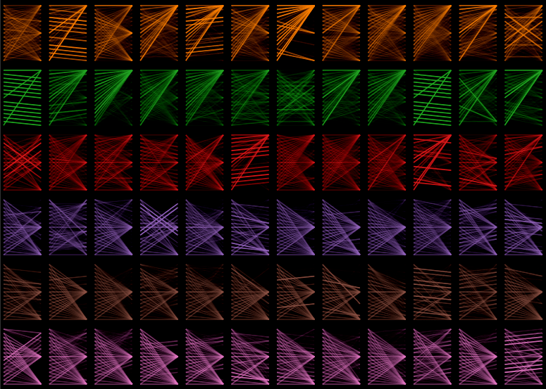

Explainers for latest discrediting posts
Here are some examples of posts containing discrediting content that were detected by our model.
*Only the final scores are shown in this visualisations, Please use bertviz for detailed analysis of the model.
💬 ივანიშვილი მიხვდა, რომ შეიძლება ჩადგეს სანქცირებული ოლიგარქების რიგში. მომაკვდინებელი შეცდომა იყო მელიას საქმის გაცოცხლება
"ჩვენ გვყავს ხელისუფლება, რომელიც რუსეთთან პირდაპირ დანაშაულებრივ, მოღალატეობრივ, კოლაბორაც
ასეთი სამარცხვინო პერსონაჟი როგორ შეიძლება სახელმწიფო უსაფრთხოების სამსახურის უფროსის მოადგილე ყოფილიყო?! რას უძლებს ეს ჩვენი საწყალი საქართველო...
"შესაბამისად, როდიონოვების, გავრილოვების, რუსების, ბოლშევიკების, ოლიგარქების ჩვენ არ გვეშინია, ჩვენ ვაგრძელებთ ბრძოლას", — განაცხადა დეკანოიძემ.
მინდა ყველას პირობა მივცე, რომ ნიკა იქნება თავისუფალი — დეკანოიძე
ღარიბაშვილი ელისაშვილს: თქვენ აყოლილი ხართ „ნაცმოძრაობის“ რაღაც ნარატივს. უნდა დავაზუსტოთ, რ
დასავლელი პარტნიორობის ეს უსიამოვნო განცხადებები, ცხადია, არ უნდა იქნას აღქმული როგორც "ყურის აწევა", "კუთხეში დაყენება" მით უმეტეს, "ჭკუის სწავლება" ანდა სამართალზე "ზეწოლა"
საქართველო სახელმწიფოა და არა "საფასილიტატორო", როგორც ეს ნაცებს მიაჩნიათ - დავით ზარდიაშვილი
📌 მიშისტებს გვეძახის ის ხალხი, ვინც იყვნენ მიშას ვაზელინები და დღეს ოცნების ვაზელინები არიან - თამაზ ელიზბარაშვილი
იქნებ, ახლა მაინც გაახილოთ რევანშით "დაფსებული" თვალები და მიხვდეთ, აგებთ ტაქტიკაში, რამდენით რამდენს გიგებენ ქოცები, დაითვალეთ - რუსა მუმლაძე
იქნებ, ახლა მაინც გაახილოთ რევანშით "დაფსებული" თვალები და მიხვდეთ, აგებთ ტაქტიკაში, რამდენით
იაგო ხვიჩია - პარტია დაუშალა კიევიდან, დაიბარა ორი ლიდერი და მესამე გადააყენეს, მიშა „ნაცმოძრაობასთან“ შესარწყმელად ამზადებს „ევსაქებს“
იაგო ხვიჩია - პარტია დაუშალა კიევიდან, დაიბარა ორი ლიდერი და მესამე გადააყენეს, მიშა „ნაცმოძრა
"ახვლედიანებმა, როგორ გაბედეს ამ ცხვირმოუხოცავებმა ამდენიო და მამამ ვერდიქტი გამოაცხადა: "გათხოვილი შვილი მკვდარია ჩემთვისო!" სიყვარულს არ ეშინია მანძილის, უფულობის, დროის, უამინდობის, სიავისა და სიკვდილისაც..."
"ზეია, მიღალატე და ჩემზე ადრე წახვედი, ხო?!"
"სასტიკადაც რომ შეურაცხმყონ და დამამცირონ, ქვებიც რომ დამიშინონ, უკრაინას არ ვუღალატებ"
რა მისწერა 10 წლის ლია ახეჯაკოვამ სტალინს? - საბჭოთა კინოლეგენდის ცხოვრება და სამი ქორწინება
ირაკლი ჩიქოვანმა გიორგი გახარიას უღალატა?
ირაკლი ჩიქოვანმა გიორგი გახარიას უღალატა?
ნაცების ლიდერშიპში განიხილება ვერსია, პარტიის დროებით თავმჯდომარედ ნიკოლოზ გვარამიას დაინიშნიშვნის შესახებ - შაკო კუჭაშვილი
ნაცების ლიდერშიპში განიხილება ვერსია, პარტიის დროებით თავმჯდომარედ ნიკოლოზ გვარამიას დაინი
"88 გავრილოვის იმედზეა ქოცნება?! ვადამდელიც იქნება!"
88 გავრილოვის იმედზეა ქოცნება?! ვადამდელიც იქნება! -სერგო ჩიხლაძე
😍 ტკბილდედიკოების ტურნირი. ��
ვინ გაიმარჯვებს?
დედამთილები თუ სიდედრები?
მამუკა მდინარაძე - „ისე მე დავფიქრდებოდი, როგორ ხდება, რომ ეს გავრილოვი ყოველთვის მაშველ რგოლად ევლინება ნაც. მოძრაობას და მათ "პატრიოტ" ლიდერებს. მით უმეტეს მათ ტელევიზიებში მათთვისვე ძალიან სასურველი "ვორდინგით"....
📌👉"ამაზე მეტს მტერი ვერაფერს დააკლებს ქართველებს, რასაც ჩვენ თვითონ ვავნებთ"
#კვირისპალიტრა
"ვის სჯერა "ნაციონალების" ტყუილების? რატომ ვართ მუდმივად დაყოფილები ამისტებად და იმისტებად - რ
„სააკაშვილი იყო სამარცხვინო პირი, მთავარსარდალი, პრეზიდენტი“ - ირაკლი ღარიბაშვილი
ირაკლი ღარიბაშვილი „ნაციონალურ მოძრაობაზე“: ამ რადიკალურ, უკვე ტერორისტებად ჩამოყალიბებულ
"ქართველებო, "ქოცისტანი" გინდოდათ?! ასეთი ქვეყნის აშენება გვინდოდა?!"
"ქართველებო, "ქოცისტანი" გინდოდათ?! ასეთი ქვეყნის აშენება გვინდოდა?!"
მეუფე ნიკოლოზი მედიას - ვიღაცამ სისულელე წამოროშა, ყველამ აიტაცეთ და იმეორეთ "პრორუსული ეპისკოპოსები აპირებენ პატრიარქის გადაყენებას" - ეს არის სამარცხვინო!
მეუფე ნიკოლოზი მედიას - ვიღაცამ სისულელე წამოროშა, ყველამ აიტაცეთ და იმეორეთ "პრორუსული ეპისკ
ლაშა ნაცვლიშვილი: დიდი პატივით, გეგმებითა და პასუხისმგებლობით ვბრუნდები “პოსტივის” ხელმძღვ
💭 "რა თქმა უნდა, მტკივნეულია მისთვის ეს თემა. ტყუილად რომ ბრალი წაუყენო ადამიანს, რომ შენ სამშობლოს მოღალატე ხარ, ეს არის რაღაც საშინელება, მეტი ცუდი რა უნდა უთხრა ადამიანს?", — განაცხადა მან.
მეუფე ვახტანგი ილია II-ზე: დღესაც ამ აზრზეა, რომ შედგეს მოლაპარაკება მეგობარ აზერბაიჯანთან
ოპოზიცია არც მიშას, არც ბიძინას, არც შალვას და არავის თამაშსა თუ “ტიტკოკებს” არ თამაშობს
"მიშას თამაშში ჩვენი ადგილი არ არის"
"ისინი „მიშას თამაშს თამაშობენ“ - იაგო ხვიჩიამ ოპოზიციის ლიდერების შეხვედრა დატოვა
📌�� როცა ვარო სადმე მიდის, ნახევარ სოფელს მაინც ესმის მისი ხმამაღალი გაფრთხილება:
"კუჭუჭ, ცოცხალი ხარ, ბიჭო?"
"შევარდანძიდან გადავინაცვლეთ "ნაც. მოძრაობაზე", რომელიც შეცვალა "ქოც.მოძრაობამ", მაგრამ არაფერი იცვლება" - მაკა ჩიჩუა
"შევარდანძიდან გადავინაცვლეთ "ნაც. მოძრაობაზე", რომელიც შეცვალა "ქოც.მოძრაობამ", მაგრამ არაფერ
“თანამედროვე ბოლშევიკები – მიხეილ სააკაშვილები, ნიკა გვარამიები, გიგა ბოკერიები, ნიკანორ მელ
„ქართული ოცნების“ პიარკონსულტანტი ლაშა ნაცვლიშვილი აცხადებს, რომ ის „პოსტ ტვ-ს“ ხელმძღვანელად ბრუნდება.
ვბრუნდები “პოსტივის” ხელმძღვანელად – ლაშა ნაცვლიშვილი |
"გაბოროტებული და ჭკუადაკარგული ბრბოს მომავალი ლიდერი"
"გაბოროტებული და ჭკუადაკარგული ბრბოს მომავალი ლიდერი" - პუტინიზმისა და პოპულიზმის გარეშე
"შემეცოდნენ, გასაცოდავებული იყო რამდენიმე ადამიანი საკუთარი ბედისგან, რომ მიშას იქით გზა არ აქვთ" - იაგო ხვიჩია
"შემეცოდნენ, გასაცოდავებული იყო რამდენიმე ადამიანი საკუთარი ბედისგან, რომ მიშას იქით გზა არ ა
გიორგი ხაინდრავა ჟიგიმანტას პავილიონისის განცხადებებს „სამარცხვინოს“ უწოდებს და „უზრდელობის მწვერვალად" აფასებს
გიორგი ხაინდრავა ჟიგიმანტას პავილიონისის განცხადებებს „სამარცხვინოს“ უწოდებს და „უზრდელო
“ბატონო ალეკო, როგორც ჩანს, “ნაცების“ რიტორიკას ხართ აყოლილი - არავითარი "კლანი" არ მაქვს და არც მქონია“ - ირაკლი ღარიბაშვილი ელისაშვილს
“ბატონო ალეკო, როგორც ჩანს, “ნაცების“ რიტორიკას ხართ აყოლილი - არავითარი "კლანი" არ მაქვს და არც
გადაცემა "დიანა ტრაპაიძის დღის ამბები" – ანა ნაცვლიშვილი
„არ გრცხვენიათ? რა სისულელეა! როგორ გაიფიქრეთ ასეთი რამ?!“…
ვალენტინობა სიკვდილისა და ორგაზმის დროს
"ხუთ-ხუთი ოპოზიციონერი მამაო ჩვენოსავით გვწყევლის და გვლანძღავს"
"მთელი ოპოზიცია ორ კაცს გვწყევლის. ე, ბიჭო, გააკეთეთ თქვენც საქმე!"
💭 "მისი პირადი კაბინეტის აღებას უყურა პირდაპირ ეთერში და ამაზე არ დაუძრავს ხმა", — თქვა მან.
ბევრმა ყოფილმა ქოცმა დამიცვა, გრიგოლ ვაშაძეს სიტყვა არ დაუძრავს, გული მწყდება — მელია
⭕ როგორც კუკავა ამბობს, „გირჩის“ ლიდერები ცდილობენ, ტელევიზიების ყურადღება მიიქციონ
➡"ეს არის მორიგი სერია. ასეთი რაღაცა ყურადღების მიქცევის იაფფასიანი მცდელობებია"
"რომ ვისხედით, ყველასთვის გასაგები იყო, რომ ისინი მიხეილ სააკაშვილის თამაშს თამაშობენ.
გვეთანხმებოდნენ, მაგრამ "სხვა გზა არ გვაქვს"თემა იყო"
"რამდენი ადამიანია, ვისაც მიშა არ უყვარს, ყველაფერი რომ ურჩევნია მიშასთან ურთიერთობას, მაგრამ
"ცდიან მელიას დაჭერას, ვუი მაგათ პატრონს და თუ ვერ დაიჭერენ, ვაი მაგათ"
"გიგი უგულავა ჩემთან იყო, სუფრა გავუშალე, პოლიტიკაზე არ გვილაპარაკია - არ მინდოდა მოგვეწამლა ა
მდინარაძის აზრით, ნაციონალური მოძრაობის რომელიმე წევრს გამბედაობა არ ეყოფა, რომ ფსევდოგმირობა ჩაიდინოს.
მამუკა მდინარაძე ნიკა მელიაზე: ნაცი და გმირი არ გაიშვა მართლა
ალეკო ელისაშვილი - ბოლომდე ფულისთვის ხელი არ მოგვიკიდია, ვის ვუღალატე ბოკერიას, უგულავას თუ ბურჯანაძეს?! ვის ღალატს მსაყვედურობენ?! - ქვეყანას ვემსახურები
ალეკო ელისაშვილი - ბოლომდე ფულისთვის ხელი არ მოგვიკიდია, ვის ვუღალატე ბოკერიას, უგულავას თუ ბუ
ჩემთვის ნიკანორ მელია, გავრილოვი და „ნაცმოძრაობა“ არის ერთი მედლის ორი მხარე
"ბატონო ალეკო, როგორც ჩანს, “ნაცების“ რიტორიკას ხართ აყოლილი" - რას პასუხობს ირაკლი ღარიბაშვილი ალეკო ელისაშვილს?
"თუკი ვინმესთან ურთიერთობა გავწყვიტე, ეს იმიტომ მოხდა რომ..." - რას პასუხობს ირაკლი ღარიბაშვილი
💭 "ჯერ ერთი, მთელი თემის გადატანა იმაზე, რომ თითქოს მოლაპარაკებები არის პარლამენტში შესვლა-არშესვლაზე, სისულელეა, ტყუილია. არ არის შესვლა-არშესვლაზე ეს მოლაპარაკებები", — განაცხადა მან.
ჯაფარიძე: სასაცილოა, თალაკვაძეს და მდინარაძეს რომ ეხვეწები, ვიღაც პარლამენტიდან არ გაუშვაო
"ეს არის სამარცხვინო, პატრიარქზე ასეთი ხმების გავრცელება დანაშაულია" - მეუფე ნიკოლოზი
"ეს არის სამარცხვინო, პატრიარქზე ასეთი ხმების გავრცელება დანაშაულია" - მეუფე ნიკოლოზი
💬 პროტესტი გაგრძელდა სრულ გამარჯვებამდე, ამ დებილმა ხელისუფლებამ მოახერხა ამდენი ადამიანის თავის წინააღმდეგ შეკრება
�� გოგი წულაია
“კორონას დროს ქუჩებს მრისხანედ რომ რეცხავდით მედიის დასანახად და სიაბანდი პიარისთვის გვახს
"საკუთარი მოქალაქეების მიმართ სიძულვილით დაბრმავებულ ხელისუფალს ძალის დემონსტრირება ჰგონია წარმატება"
ნინო ლომჯარია: ,,არაფერი ამაზე სამარცხვინო არ შეიძლება მომხდარიყო 23 თებერვალს"
კოდიწყაროს ტბა და ღორინამკალის მთა
"მიკვირს იმ ადამიანების, ვინც იჯდა სტუდიაში და ხმა არ ამოუღიათ! შეუძლებელია, ადამიანს ქართველი ერქვას და ასეთ რამეს არ აპროტესტებდეს!"
"კაცი სადავო ტერიტორიაზე ამბობს, აზერბაიჯანისააო! რა უბედურების წინაშე ვდგავართ, ვერ აცნობიე
📌 ზუსტად ეს არის განგრენის სიმბოლო, როდესაც უმრავლესობის ლიდერი გამოდის და პატარა ნაბიჭვარივით უტიკინებს ხალხს - გიგი უგულავა
ორი ქურთუკის ისტორია, რომლებმაც ნიკა მელია სკანდალში გახვიეს - “ხალხო, დამაკომპლექსეს, ვეღარ ვიცვამ“
ქურთუკების ისტორია, რომლებმაც ნიკა მელია სკანდალში გახვიეს - “ხალხო, დამაკომპლექსეს, ვეღარ ვი
ირაკლი ღარიბაშვილი ელისაშვილს - ბატონო ალეკო, როგორც ჩანს, “ნაცების“ რიტორიკას ხართ აყოლილი - არავითარი "კლანი" არ მაქვს და არც მქონია
ირაკლი ღარიბაშვილი ელისაშვილს - ბატონო ალეკო, როგორც ჩანს, “ნაცების“ რიტორიკას ხართ აყოლილი -
ვახტანგ მეგრელიშვილი - ტვ-ს ვუყურებ და მეჩვენება, რომ მესმის „ნაცების“ მუდარა: დამჩაგრე სულთამხუთაო და ყოვლისშემძლე მაჯლაჯუნა!
ვახტანგ მეგრელიშვილი - ტვ-ს ვუყურებ და მეჩვენება, რომ მესმის „ნაცების“ მუდარა: დამჩაგრე სულთამ
📌 ლომჯარიამ დღეს თქვა, რომ გასაბჭოებიდან 100 წლის თავზე არაფერი იმაზე სამარცხვინო არ შეიძლებოდა მომხდარიყო, როგორც ოპოზიციური პარტიის ოფისის დარბევა.
ჯობია, ლომჯარიამ ამ ემოციურ შეძახილებს თავი დაანებოს — ვოლსკი
“ვაქცინაცია - გაშიფრეთ, “ნაცი“ ურევია შიგნით!“ - გიორგი გაბუნიას განცხადებით, გადაცემის დაწყებამდე მიხვდა, თუ რატომ არ იწყება ვაქცინაცია საქართველოში
“ვაქცინაცია - გაშიფრეთ, “ნაცი“ ურევია შიგნით!“ - გიორგი გაბუნიას განცხადებით, გადაცემის დაწყებ
სააკაშვილის თქმით, ელჩი უკრაინის ინტერესების საწინააღმდეგოდ მოქმედებს და მიაღწევს იმას, რომ "ასეთი ელჩები არც საქართველოს ჰყავდეს და არც უკრანას".
კრიტიკის პასუხად სააკაშვილი უკრაინის ელჩს "კორუმპირებულსა" და "სამარცხვინოს" უწოდებს
"მე და ჩემმა მეუღლემ გუშინ გვიან ღამით ვისაუბრეთ და ერთმანეთი გავამხნევეთ და ერთმანეთს ვუთხარით, რომ ჩვენ გავზარდეთ შვილი სწორად"
"ჩემი შვილის მოქმედებას მე ვამართლებ და მინდა "ქოცებს" მივმართო" - ანზორ მელიას ემოციური
ახლად გამოჩეკილი ლიდერი, ხელოვნურად შექმნილი ნიკანორ მელია ვაჟკაცობს, რომ კანონს არ შეასრულე
როცა საზოგადოება დუმს - ყველაზე მძიმე ამბავი ქობულეთიდან
#იმედისკვირა
ახალი პოლიტიკური ქოუბები | ვანოს შოუ
💭 "როცა უსამართლობა კარებზე გვიკაკუნებს, ჩვენ ის მოუსავლეთში უნდა გავისტუმროთ", — ამბობს დეკანოიძე.
დღეიდან ვიწყებთ განმათავისუფლებელ მოძრაობას, აღარ არის პარტიული ზღვარის დრო — დეკანოიძე
📌 "მოიფიქრე რამე, თორემ დაგვენგრა ოჯახი"
�� მოიფიქროს ეხლა ქართულმა ოცნებამ რამე - გიგა ბოკერია
💬 წაქცეული ვიყავი, მომეპარნენ, ქალს ხელი დაარტყეს, ბავშვი ტიროდა, არ ჩერდებოდა - ამ ფარჩაკებს და არაკაცებს მინდა ვუთხრა, ქუჩაშიც არ მოსულა ასეთი ამბავი
🗣 ვახო სანაია
ამ ტექსტის ავტორი არის უვიცი და უწიგნური! სირცხვილია ასეთ ტექსტებს რომ დებს მთავრობა! თავის მოჭრაა და მეტი არაფერი
წლებია უნამუსოდ ვაჭრობ მოკლული ძმით და ახლაც ღიად თანამშრომლობ იმ ძალებთან, ვინც რეალურად მოგიკლა ძმა! - ბაკურ სვანიძე ვახო სანაიას
წლებია უნამუსოდ ვაჭრობ მოკლული ძმით და ახლაც ღიად თანამშრომლობ იმ ძალებთან, ვინც რეალურად მო
"მიშას ბრალი არის ის, რომ ერთ მხარეს ბურჯანაძე ეჯდა და მეორე მხარეს ბოკერია, კიდევ რანაირად შეძლო იმ კაცმა რამის გაკეთება"
"მიშას ბრალი არის ის, რომ ერთ მხარეს ბურჯანაძე ეჯდა და მეორე მხარეს ბოკერია, კიდევ რანაირად შეძ
დავით ზარდიაშვილი - ეგ ბოლო "ჭიქა" მაინც არ უნდა "ჩაერტყათ", მთლად გამოიბრუჟნენ, ფეხი აერიათ და "კანაოში" გადაცვივდნენ, არა, რა, რესპები არ უნდა გაეკარონ პოლიტიკას
დავით ზარდიაშვილი - ეგ ბოლო "ჭიქა" მაინც არ უნდა "ჩაერტყათ", მთლად გამოიბრუჟნენ, ფეხი აერიათ და "კ
ჩვენი გვერდის მკითხველმა, ნინო წილოსანმა, უგემრიელესი ბლინების რეცეპტი გაგვიზიარა.
ბლინები ხაჭოთი და ქიშმიშით - ჩვენი მკითხველის რეცეპტი
რადიკალიზმიდან ანარქისტობამდე - ვინ თამაშობს მიშას თამაშს? მელიას დასაცავად ოპოზიციიდან ზოგი ფიზიკურ წინააღმდეგობას გეგმავს, ზოგი საპასუხო თავდასხმას, მათ შორის პოლიციაზე
"ბიჭო, მოვიგეთ, მოვიგეთ" - ემოციური კადრები, რუსეთის დამარცხების შემდეგ, ბორჯღალოსნებმა რაგბი ევროპის ჩემპიონატის თასი აღმართეს
"ბიჭო, მოვიგეთ, მოვიგეთ" - ემოციუნრი კადრები, რუსეთის დამარცხების შემდეგ, ბორჯღალოსნებმა რაგბი
მიხეილ სააკაშვილი "ქართულ ოცნებაზე" - ცდიან მელიას დაჭერას, ვუი მაგათ პატრონს და თუ ვერ დაიჭერენ - ვაი მაგათ
მიხეილ სააკაშვილი "ქართულ ოცნებაზე" - ცდიან მელიას დაჭერას, ვუი მაგათ პატრონს და თუ ვერ დაიჭერე
📌�� ნახეთ, რას წერს მესამე პრეზიდენტი "ფეისბუქზე"
"საბრალო ჩემო ქვეყანა, ვის ხელში ხარ ჩავარდნილი - ამათი ბოგინი დასასრულს უახლოვდება"
შოთა გლურჯიძე - დროზე ჰქენით რამე, თორემ დაიწო ჯიგარი, ეს ნულოვანი ბარიერიც შეიძლება ვერ გადალახონ შემოდგომაზე ამ კეთილგამწესებულებმა
შოთა გლურჯიძე - დროზე ჰქენით რამე, თორემ დაიწო ჯიგარი, ეს ნულოვანი ბარიერიც შეიძლება ვერ გადალ
💬 იაფასიანი, უნიჭო მცდელობაა, რაც პიარს ცვლის ქვეყნის შიგნით და გარეთ წნეხის დროს, ვითომ ნაბიჯის გადადგმით
�� გიგა ბოკერია პროკურატურის განცხადებაზე
გიგი უგულავა - ეს სამარცხვინო პროცესი იურიდიულად როგორც უნდათ ისე "ჩააქრონ", სხვა შემთხვევაში მოუწევთ სპეცრაზმით მოსვლა
გიგი უგულავა - ეს სამარცხვინო პროცესი იურიდიულად როგორც უნდათ ისე "ჩააქრონ", სხვა შემთხვევაში
“ნიკოლი მოღალატეა” – ერევანში ოპოზიცია ისევ შეიკრიბა |
არაფერი იმაზე სამარცხვინო არ შეიძლება მომხდარიყო 23 თებერვალს, როგორც ოპოზიციური პარტიის ოფი
ბარსელონას და პსჟ-ს ურთიერთშეხვედრების სტატისტიკა 👨��
შეძლებს პოჩეტინო დღეს კუმანის დამარცხებას? 👊
💬 მოდი ეხლა დაგაჩმორებ და მერე, როგორც ჩმორს დაგელაპარაკები, ასეთი ჩმორები უკვე ჰყავთ პარლამენტში
�� გიგი უგულავა, ხელისუფლების და ღარიბაშვილის ტონზე
ჩვენ გვყავს ხელისუფლება, რომელიც პირდაპირ დანაშაულებრივ მოღალატეობრივ კოლაბორაციულ ურთიერ
"საქართველო საუკეთესოდ გაუმკლავდა ამ მძიმე შემოტევას"
პანდემიის მხარეს იბძვიან ნაცები, მაგრამ საქართველოს ვერ მოერევიან - დავით ზარდიაშვილი
"ორივე ერთდროულად თუ არ მოაშთე შეუძლებელია მათი მოცილება"
სულ ვფიქრობდი, ალბათ ნაცები უნდა მოვიცილოთ, რომ ქოცები თავისით გადაშენდნენ მეთქი - შოთა გლურჯი
ნიკა მელიას სასამართლომ აღკვეთის ღონისძიების სახით პატიმრობა მიუსაჯა.
მელია: უსამართლო ძლიერება ოლიგარქატს თვალსა და ხელს შუა ეფშვნება
📢 ნაძირალა ▪ მოღალატეები ▪ ბოროტი მასხარა ▪ სულელი ▪ ბრიყვი ▪ შეშლილი მანიაკი
�� ირაკლი ღარიბაშვილის ლექსიკა
მიხეილ სააკაშვილსა და „ნაცმოძრაობას” გენეტიკურ კოდში აქვთ ადამიანის დაჭერის გზით რაღაც შედ